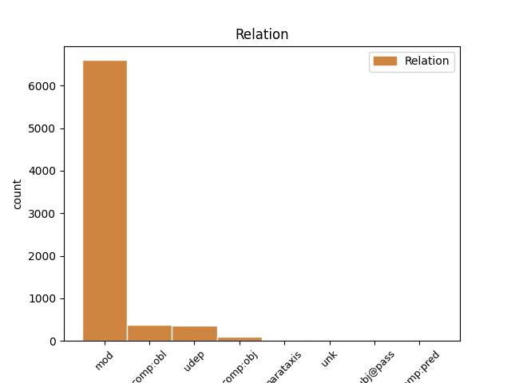
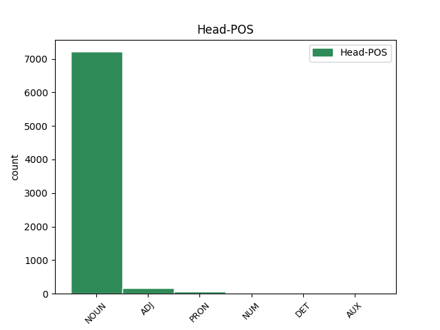
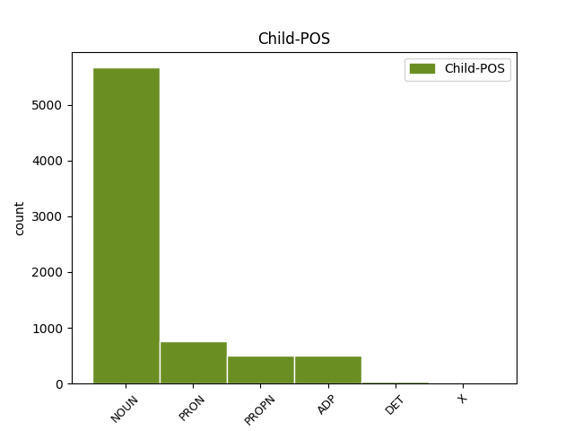

Distribution of features within this leaf



Agreement Rules sorted by frequency.
- When the dependent token is the modifer(mod) of the head token, and the head token is NOUN and the dependent token is NOUN.
1 Ginčai _ _ _ _ 0 _ _ _
2 dėl _ _ _ _ 0 _ _ _
3 šio _ _ _ _ 0 _ _ _
4 reglamento reglamentas NOUN dkt.vyr.vns.K. Case=Gen|Gender=Masc|Number=Sing 5 mod _ _
5 taikymo taikymas NOUN dkt.vyr.vns.K. Case=Gen|Gender=Masc|Number=Sing 0 _ _ _
6 nagrinėjami _ _ _ _ 0 _ _ _
7 įstatymų _ _ _ _ 0 _ _ _
8 nustatyta _ _ _ _ 0 _ _ _
9 tvarka _ _ _ _ 0 _ _ _
10 . _ _ _ _ 0 _ _ _
1 Balsuojant _ _ _ _ 0 _ _ _
2 kiekvienas _ _ _ _ 0 _ _ _
3 Komiteto _ _ _ _ 0 _ _ _
4 narys _ _ _ _ 0 _ _ _
5 turi _ _ _ _ 0 _ _ _
6 po _ _ _ _ 0 _ _ _
7 vieną vienas PRON įv.vyr.vns.G. Case=Acc|Definite=Ind|Gender=Masc|Number=Sing|PronType=Ind 8 mod _ _
8 balsą balsas NOUN dkt.vyr.vns.G. Case=Acc|Gender=Masc|Number=Sing 0 _ _ _
9 . _ _ _ _ 0 _ _ _
1 23 _ _ _ _ 0 _ _ _
2 . _ _ _ _ 0 _ _ _
3 Kalendoriniams _ _ _ _ 0 _ _ _
4 metams _ _ _ _ 0 _ _ _
5 pasibaigus _ _ _ _ 0 _ _ _
6 , _ _ _ _ 0 _ _ _
7 Komiteto _ _ _ _ 0 _ _ _
8 sekretorius _ _ _ _ 0 _ _ _
9 turimus _ _ _ _ 0 _ _ _
10 dokumentus _ _ _ _ 0 _ _ _
11 , _ _ _ _ 0 _ _ _
12 susijusius _ _ _ _ 0 _ _ _
13 su _ _ _ _ 0 _ _ _
14 Komiteto _ _ _ _ 0 _ _ _
15 posėdžiais _ _ _ _ 0 _ _ _
16 , _ _ _ _ 0 _ _ _
17 perduoda _ _ _ _ 0 _ _ _
18 saugoti _ _ _ _ 0 _ _ _
19 Aplinkos _ _ _ _ 0 _ _ _
20 ministerijai _ _ _ _ 0 _ _ _
21 , _ _ _ _ 0 _ _ _
22 kur _ _ _ _ 0 _ _ _
23 jie _ _ _ _ 0 _ _ _
24 saugomi _ _ _ _ 0 _ _ _
25 5 _ _ _ _ 0 _ _ _
26 metus _ _ _ _ 0 _ _ _
27 , _ _ _ _ 0 _ _ _
28 vadovaujantis _ _ _ _ 0 _ _ _
29 Lietuvos _ _ _ _ 0 _ _ _
30 archyvų _ _ _ _ 0 _ _ _
31 departamento _ _ _ _ 0 _ _ _
32 prie _ _ _ _ 0 _ _ _
33 Lietuvos Lietuva PROPN dkt.tikr.mot.vns.K. Case=Gen|Gender=Fem|Number=Sing 34 mod _ _
34 Respublikos respublika NOUN dkt.mot.vns.K. Case=Gen|Gender=Fem|Number=Sing 0 _ _ _
35 Vyriausybės _ _ _ _ 0 _ _ _
36 1997 _ _ _ _ 0 _ _ _
37 m _ _ _ _ 0 _ _ _
38 . _ _ _ _ 0 _ _ _
39 rugpjūčio _ _ _ _ 0 _ _ _
40 15 _ _ _ _ 0 _ _ _
41 d _ _ _ _ 0 _ _ _
42 . _ _ _ _ 0 _ _ _
43 įsakymu _ _ _ _ 0 _ _ _
44 Nr _ _ _ _ 0 _ _ _
45 . _ _ _ _ 0 _ _ _
46 38 _ _ _ _ 0 _ _ _
47 „ _ _ _ _ 0 _ _ _
48 Dėl _ _ _ _ 0 _ _ _
49 bendrųjų _ _ _ _ 0 _ _ _
50 dokumentų _ _ _ _ 0 _ _ _
51 saugojimo _ _ _ _ 0 _ _ _
52 terminų _ _ _ _ 0 _ _ _
53 “ _ _ _ _ 0 _ _ _
54 ( _ _ _ _ 0 _ _ _
55 Žin _ _ _ _ 0 _ _ _
56 . _ _ _ _ 0 _ _ _
57 , _ _ _ _ 0 _ _ _
58 1997 _ _ _ _ 0 _ _ _
59 , _ _ _ _ 0 _ _ _
60 Nr _ _ _ _ 0 _ _ _
61 . _ _ _ _ 0 _ _ _
62 78-006 _ _ _ _ 0 _ _ _
63 ) _ _ _ _ 0 _ _ _
64 . _ _ _ _ 0 _ _ _
1 6.4 _ _ _ _ 0 _ _ _
2 . _ _ _ _ 0 _ _ _
3 stokojant _ _ _ _ 0 _ _ _
4 lėšų _ _ _ _ 0 _ _ _
5 valstybės _ _ _ _ 0 _ _ _
6 paramai _ _ _ _ 0 _ _ _
7 teikti _ _ _ _ 0 _ _ _
8 , _ _ _ _ 0 _ _ _
9 derina _ _ _ _ 0 _ _ _
10 Programą _ _ _ _ 0 _ _ _
11 įgyvendinančios _ _ _ _ 0 _ _ _
12 agentūros _ _ _ _ 0 _ _ _
13 sudarytą _ _ _ _ 0 _ _ _
14 pretendentų _ _ _ _ 0 _ _ _
15 valstybės _ _ _ _ 0 _ _ _
16 paramai _ _ _ _ 0 _ _ _
17 gauti _ _ _ _ 0 _ _ _
18 sąrašą _ _ _ _ 0 _ _ _
19 , _ _ _ _ 0 _ _ _
20 kuris _ _ _ _ 0 _ _ _
21 parengiamas _ _ _ _ 0 _ _ _
22 vadovaujantis _ _ _ _ 0 _ _ _
23 Lietuvos _ _ _ _ 0 _ _ _
24 Respublikos _ _ _ _ 0 _ _ _
25 Vyriausybės _ _ _ _ 0 _ _ _
26 2004 _ _ _ _ 0 _ _ _
27 m _ _ _ _ 0 _ _ _
28 . _ _ _ _ 0 _ _ _
29 rugsėjo _ _ _ _ 0 _ _ _
30 23 _ _ _ _ 0 _ _ _
31 d _ _ _ _ 0 _ _ _
32 . _ _ _ _ 0 _ _ _
33 nutarimo nutarimas NOUN dkt.vyr.vns.K. Case=Gen|Gender=Masc|Number=Sing 0 _ _ _
34 Nr _ _ _ _ 0 _ _ _
35 . _ _ _ _ 0 _ _ _
36 1213 _ _ _ _ 0 _ _ _
37 „ _ _ _ _ 0 _ _ _
38 Dėl dėl ADP prl.K. AdpType=Prep|Case=Gen 33 comp:obl _ _
39 daugiabučių _ _ _ _ 0 _ _ _
40 namų _ _ _ _ 0 _ _ _
41 modernizavimo _ _ _ _ 0 _ _ _
42 programos _ _ _ _ 0 _ _ _
43 “ _ _ _ _ 0 _ _ _
44 3 _ _ _ _ 0 _ _ _
45 punkte _ _ _ _ 0 _ _ _
46 nurodytais _ _ _ _ 0 _ _ _
47 kriterijais _ _ _ _ 0 _ _ _
48 ; _ _ _ _ 0 _ _ _
1 23 _ _ _ _ 0 _ _ _
2 . _ _ _ _ 0 _ _ _
3 Kalendoriniams _ _ _ _ 0 _ _ _
4 metams _ _ _ _ 0 _ _ _
5 pasibaigus _ _ _ _ 0 _ _ _
6 , _ _ _ _ 0 _ _ _
7 Komiteto _ _ _ _ 0 _ _ _
8 sekretorius _ _ _ _ 0 _ _ _
9 turimus _ _ _ _ 0 _ _ _
10 dokumentus _ _ _ _ 0 _ _ _
11 , _ _ _ _ 0 _ _ _
12 susijusius _ _ _ _ 0 _ _ _
13 su _ _ _ _ 0 _ _ _
14 Komiteto _ _ _ _ 0 _ _ _
15 posėdžiais _ _ _ _ 0 _ _ _
16 , _ _ _ _ 0 _ _ _
17 perduoda _ _ _ _ 0 _ _ _
18 saugoti _ _ _ _ 0 _ _ _
19 Aplinkos _ _ _ _ 0 _ _ _
20 ministerijai _ _ _ _ 0 _ _ _
21 , _ _ _ _ 0 _ _ _
22 kur _ _ _ _ 0 _ _ _
23 jie _ _ _ _ 0 _ _ _
24 saugomi _ _ _ _ 0 _ _ _
25 5 _ _ _ _ 0 _ _ _
26 metus _ _ _ _ 0 _ _ _
27 , _ _ _ _ 0 _ _ _
28 vadovaujantis _ _ _ _ 0 _ _ _
29 Lietuvos _ _ _ _ 0 _ _ _
30 archyvų _ _ _ _ 0 _ _ _
31 departamento departamentas NOUN dkt.vyr.vns.K. Case=Gen|Gender=Masc|Number=Sing 0 _ _ _
32 prie prie ADP prl.K. AdpType=Prep|Case=Gen 31 udep _ _
33 Lietuvos _ _ _ _ 0 _ _ _
34 Respublikos _ _ _ _ 0 _ _ _
35 Vyriausybės _ _ _ _ 0 _ _ _
36 1997 _ _ _ _ 0 _ _ _
37 m _ _ _ _ 0 _ _ _
38 . _ _ _ _ 0 _ _ _
39 rugpjūčio _ _ _ _ 0 _ _ _
40 15 _ _ _ _ 0 _ _ _
41 d _ _ _ _ 0 _ _ _
42 . _ _ _ _ 0 _ _ _
43 įsakymu _ _ _ _ 0 _ _ _
44 Nr _ _ _ _ 0 _ _ _
45 . _ _ _ _ 0 _ _ _
46 38 _ _ _ _ 0 _ _ _
47 „ _ _ _ _ 0 _ _ _
48 Dėl _ _ _ _ 0 _ _ _
49 bendrųjų _ _ _ _ 0 _ _ _
50 dokumentų _ _ _ _ 0 _ _ _
51 saugojimo _ _ _ _ 0 _ _ _
52 terminų _ _ _ _ 0 _ _ _
53 “ _ _ _ _ 0 _ _ _
54 ( _ _ _ _ 0 _ _ _
55 Žin _ _ _ _ 0 _ _ _
56 . _ _ _ _ 0 _ _ _
57 , _ _ _ _ 0 _ _ _
58 1997 _ _ _ _ 0 _ _ _
59 , _ _ _ _ 0 _ _ _
60 Nr _ _ _ _ 0 _ _ _
61 . _ _ _ _ 0 _ _ _
62 78-006 _ _ _ _ 0 _ _ _
63 ) _ _ _ _ 0 _ _ _
64 . _ _ _ _ 0 _ _ _
1 Būna _ _ _ _ 0 _ _ _
2 žmogaus _ _ _ _ 0 _ _ _
3 gyvenime _ _ _ _ 0 _ _ _
4 tokių _ _ _ _ 0 _ _ _
5 akimirkų _ _ _ _ 0 _ _ _
6 , _ _ _ _ 0 _ _ _
7 kai _ _ _ _ 0 _ _ _
8 jis _ _ _ _ 0 _ _ _
9 yra _ _ _ _ 0 _ _ _
10 labai _ _ _ _ 0 _ _ _
11 lengvai _ _ _ _ 0 _ _ _
12 užklumpamas _ _ _ _ 0 _ _ _
13 , _ _ _ _ 0 _ _ _
14 žmogiškas _ _ _ _ 0 _ _ _
15 , _ _ _ _ 0 _ _ _
16 tiesiog _ _ _ _ 0 _ _ _
17 pasibjaurėtinai _ _ _ _ 0 _ _ _
18 žmogus _ _ _ _ 0 _ _ _
19 ir _ _ _ _ 0 _ _ _
20 daugiau _ _ _ _ 0 _ _ _
21 niekas niekas PRON įv.V. Case=Nom|Definite=Ind|PronType=Neg 0 _ _ _
22 kitas kitas PRON įv.vyr.vns.V. Case=Nom|Definite=Ind|Gender=Masc|Number=Sing|PronType=Ind 21 mod _ SpaceAfter=No
23 . _ _ _ _ 0 _ _ _
1 Vis _ _ _ _ 0 _ _ _
2 daugiau _ _ _ _ 0 _ _ _
3 duomenų _ _ _ _ 0 _ _ _
4 subjektų _ _ _ _ 0 _ _ _
5 kreipiasi _ _ _ _ 0 _ _ _
6 į _ _ _ _ 0 _ _ _
7 Inspekciją _ _ _ _ 0 _ _ _
8 norėdami _ _ _ _ 0 _ _ _
9 sužinoti _ _ _ _ 0 _ _ _
10 apie _ _ _ _ 0 _ _ _
11 įstatymų _ _ _ _ 0 _ _ _
12 jiems _ _ _ _ 0 _ _ _
13 suteiktas _ _ _ _ 0 _ _ _
14 teises _ _ _ _ 0 _ _ _
15 duomenų _ _ _ _ 0 _ _ _
16 apsaugos _ _ _ _ 0 _ _ _
17 srityje _ _ _ _ 0 _ _ _
18 , _ _ _ _ 0 _ _ _
19 apie _ _ _ _ 0 _ _ _
20 duomenų _ _ _ _ 0 _ _ _
21 valdytojų valdytojas NOUN dkt.vyr.dgs.K. Case=Gen|Gender=Masc|Number=Plur 22 comp:obj _ _
22 atliekamų atliekamas ADJ bdv.nelygin.vyr.dgs.K. Case=Gen|Definite=Ind|Degree=Pos|Gender=Masc|Number=Plur 0 _ _ _
23 duomenų _ _ _ _ 0 _ _ _
24 tvarkymo _ _ _ _ 0 _ _ _
25 veiksmų _ _ _ _ 0 _ _ _
26 teisėtumą _ _ _ _ 0 _ _ _
27 , _ _ _ _ 0 _ _ _
28 didėja _ _ _ _ 0 _ _ _
29 ir _ _ _ _ 0 _ _ _
30 visuomenės _ _ _ _ 0 _ _ _
31 informavimo _ _ _ _ 0 _ _ _
32 priemonių _ _ _ _ 0 _ _ _
33 susidomėjimas _ _ _ _ 0 _ _ _
34 Inspekcijos _ _ _ _ 0 _ _ _
35 vykdoma _ _ _ _ 0 _ _ _
36 veikla _ _ _ _ 0 _ _ _
37 . _ _ _ _ 0 _ _ _
1 JAV _ _ _ _ 0 _ _ _
2 ir _ _ _ _ 0 _ _ _
3 Lietuvos _ _ _ _ 0 _ _ _
4 vaikų _ _ _ _ 0 _ _ _
5 kai _ _ _ _ 0 _ _ _
6 kurių _ _ _ _ 0 _ _ _
7 skalių _ _ _ _ 0 _ _ _
8 įverčių _ _ _ _ 0 _ _ _
9 vidurkių _ _ _ _ 0 _ _ _
10 skirtumai _ _ _ _ 0 _ _ _
11 reikšmingi _ _ _ _ 0 _ _ _
12 , _ _ _ _ 0 _ _ _
13 be _ _ _ _ 0 _ _ _
14 to _ _ _ _ 0 _ _ _
15 , _ _ _ _ 0 _ _ _
16 daugumos dauguma NOUN dkt.mot.vns.K. Case=Gen|Gender=Fem|Number=Sing 19 udep _ _
17 skalių _ _ _ _ 0 _ _ _
18 Lietuvos _ _ _ _ 0 _ _ _
19 vaikų vaikas NOUN dkt.vyr.dgs.K. Case=Gen|Gender=Masc|Number=Plur 0 _ _ _
20 vidurkiai _ _ _ _ 0 _ _ _
21 , _ _ _ _ 0 _ _ _
22 palyginti _ _ _ _ 0 _ _ _
23 su _ _ _ _ 0 _ _ _
24 JAV _ _ _ _ 0 _ _ _
25 duomenimis _ _ _ _ 0 _ _ _
26 , _ _ _ _ 0 _ _ _
27 yra _ _ _ _ 0 _ _ _
28 aukštesni _ _ _ _ 0 _ _ _
29 , _ _ _ _ 0 _ _ _
30 tačiau _ _ _ _ 0 _ _ _
31 efekto _ _ _ _ 0 _ _ _
32 dydis _ _ _ _ 0 _ _ _
33 , _ _ _ _ 0 _ _ _
34 kai _ _ _ _ 0 _ _ _
35 atsižvelgiama _ _ _ _ 0 _ _ _
36 į _ _ _ _ 0 _ _ _
37 lytį _ _ _ _ 0 _ _ _
38 , _ _ _ _ 0 _ _ _
39 amžių _ _ _ _ 0 _ _ _
40 ir _ _ _ _ 0 _ _ _
41 šalį _ _ _ _ 0 _ _ _
42 , _ _ _ _ 0 _ _ _
43 yra _ _ _ _ 0 _ _ _
44 labai _ _ _ _ 0 _ _ _
45 mažas _ _ _ _ 0 _ _ _
46 , _ _ _ _ 0 _ _ _
47 t _ _ _ _ 0 _ _ _
48 . _ _ _ _ 0 _ _ _
49 y _ _ _ _ 0 _ _ _
50 . _ _ _ _ 0 _ _ _
51 mažesnis _ _ _ _ 0 _ _ _
52 nei _ _ _ _ 0 _ _ _
53 1 _ _ _ _ 0 _ _ _
54 proc _ _ _ _ 0 _ _ _
55 . _ _ _ _ 0 _ _ _
1 Tokios _ _ _ _ 0 _ _ _
2 knygos _ _ _ _ 0 _ _ _
3 aktualumas _ _ _ _ 0 _ _ _
4 tiesiog _ _ _ _ 0 _ _ _
5 neabejotinas _ _ _ _ 0 _ _ _
6 dėl _ _ _ _ 0 _ _ _
7 keleto keletas PRON įv.K. Case=Gen|Definite=Ind|PronType=Ind 0 _ _ _
8 priežasčių priežastis NOUN dkt.mot.dgs.K. Case=Gen|Gender=Fem|Number=Plur 7 mod _ SpaceAfter=No
9 : _ _ _ _ 0 _ _ _
10 ypatingos _ _ _ _ 0 _ _ _
11 žiniasklaidos _ _ _ _ 0 _ _ _
12 vietos _ _ _ _ 0 _ _ _
13 Lietuvos _ _ _ _ 0 _ _ _
14 visuomenėje _ _ _ _ 0 _ _ _
15 , _ _ _ _ 0 _ _ _
16 naujų _ _ _ _ 0 _ _ _
17 spaudos _ _ _ _ 0 _ _ _
18 tradicijų _ _ _ _ 0 _ _ _
19 šalyje _ _ _ _ 0 _ _ _
20 ir _ _ _ _ 0 _ _ _
21 ypač _ _ _ _ 0 _ _ _
22 šykščių _ _ _ _ 0 _ _ _
23 lingvistinių _ _ _ _ 0 _ _ _
24 tyrimų _ _ _ _ 0 _ _ _
25 spaudos _ _ _ _ 0 _ _ _
26 žanrų _ _ _ _ 0 _ _ _
27 srityje _ _ _ _ 0 _ _ _
28 . _ _ _ _ 0 _ _ _
1 16 _ _ _ _ 0 _ _ _
2 . _ _ _ _ 0 _ _ _
3 Verslo _ _ _ _ 0 _ _ _
4 inkubatorius _ _ _ _ 0 _ _ _
5 – _ _ _ _ 0 _ _ _
6 viešoji _ _ _ _ 0 _ _ _
7 įstaiga _ _ _ _ 0 _ _ _
8 , _ _ _ _ 0 _ _ _
9 kurios _ _ _ _ 0 _ _ _
10 savininkė _ _ _ _ 0 _ _ _
11 arba _ _ _ _ 0 _ _ _
12 viena _ _ _ _ 0 _ _ _
13 iš _ _ _ _ 0 _ _ _
14 dalininkų _ _ _ _ 0 _ _ _
15 yra _ _ _ _ 0 _ _ _
16 valstybė valstybė NOUN dkt.mot.vns.V. Case=Nom|Gender=Fem|Number=Sing 0 _ _ _
17 ir _ _ _ _ 0 _ _ _
18 ( _ _ _ _ 0 _ _ _
19 arba _ _ _ _ 0 _ _ _
20 ) _ _ _ _ 0 _ _ _
21 savivaldybė _ _ _ _ 0 _ _ _
22 ir _ _ _ _ 0 _ _ _
23 kurios _ _ _ _ 0 _ _ _
24 tikslas tikslas NOUN dkt.vyr.vns.V. Case=Nom|Gender=Masc|Number=Sing 16 unk _ _
25 – _ _ _ _ 0 _ _ _
26 teikiant _ _ _ _ 0 _ _ _
27 viešąsias _ _ _ _ 0 _ _ _
28 paslaugas _ _ _ _ 0 _ _ _
29 verslui _ _ _ _ 0 _ _ _
30 , _ _ _ _ 0 _ _ _
31 sumažinti _ _ _ _ 0 _ _ _
32 verslą _ _ _ _ 0 _ _ _
33 pradedančių _ _ _ _ 0 _ _ _
34 įmonių _ _ _ _ 0 _ _ _
35 veiklos _ _ _ _ 0 _ _ _
36 riziką _ _ _ _ 0 _ _ _
37 ir _ _ _ _ 0 _ _ _
38 padėti _ _ _ _ 0 _ _ _
39 joms _ _ _ _ 0 _ _ _
40 įsitvirtinti _ _ _ _ 0 _ _ _
41 rinkoje _ _ _ _ 0 _ _ _
42 , _ _ _ _ 0 _ _ _
43 taip _ _ _ _ 0 _ _ _
44 pat _ _ _ _ 0 _ _ _
45 skatinti _ _ _ _ 0 _ _ _
46 smulkiojo _ _ _ _ 0 _ _ _
47 ir _ _ _ _ 0 _ _ _
48 vidutinio _ _ _ _ 0 _ _ _
49 verslo _ _ _ _ 0 _ _ _
50 subjektų _ _ _ _ 0 _ _ _
51 veiklos _ _ _ _ 0 _ _ _
52 plėtrą _ _ _ _ 0 _ _ _
53 . _ _ _ _ 0 _ _ _
1 Būtina _ _ _ _ 0 _ _ _
2 pabrėžti _ _ _ _ 0 _ _ _
3 dar _ _ _ _ 0 _ _ _
4 vieną vienas PRON įv.vyr.vns.G. Case=Acc|Definite=Ind|Gender=Masc|Number=Sing|PronType=Ind 5 mod _ _
5 svarbų svarbus ADJ bdv.nelygin.vyr.vns.G. Case=Acc|Definite=Ind|Degree=Pos|Gender=Masc|Number=Sing 0 _ _ _
6 šios _ _ _ _ 0 _ _ _
7 knygos _ _ _ _ 0 _ _ _
8 privalumą _ _ _ _ 0 _ _ _
9 terminų _ _ _ _ 0 _ _ _
10 pateikimo _ _ _ _ 0 _ _ _
11 atžvilgiu _ _ _ _ 0 _ _ _
12 . _ _ _ _ 0 _ _ _
1 Dabartinė _ _ _ _ 0 _ _ _
2 Kultūros _ _ _ _ 0 _ _ _
3 ministerijos _ _ _ _ 0 _ _ _
4 struktūra _ _ _ _ 0 _ _ _
5 trukdo _ _ _ _ 0 _ _ _
6 įvertinti _ _ _ _ 0 _ _ _
7 įvairių _ _ _ _ 0 _ _ _
8 kuruojamų _ _ _ _ 0 _ _ _
9 sričių _ _ _ _ 0 _ _ _
10 specifiką _ _ _ _ 0 _ _ _
11 , _ _ _ _ 0 _ _ _
12 ypač _ _ _ _ 0 _ _ _
13 kai kai PRON sampl.įv.mot.dgs.K. Case=Gen|Definite=Ind|Gender=Fem|Hyph=Yes|Number=Plur|PronType=Ind 0 _ _ _
14 kurių _ _ _ _ 0 _ _ _
15 iš iš ADP prl.K. AdpType=Prep|Case=Gen 13 comp:obl _ _
16 jų _ _ _ _ 0 _ _ _
17 tarpdisciplininį _ _ _ _ 0 _ _ _
18 pobūdį _ _ _ _ 0 _ _ _
19 , _ _ _ _ 0 _ _ _
20 savitą _ _ _ _ 0 _ _ _
21 santykį _ _ _ _ 0 _ _ _
22 su _ _ _ _ 0 _ _ _
23 visuomene _ _ _ _ 0 _ _ _
24 ir _ _ _ _ 0 _ _ _
25 kitomis _ _ _ _ 0 _ _ _
26 valstybės _ _ _ _ 0 _ _ _
27 politikos _ _ _ _ 0 _ _ _
28 sritimis _ _ _ _ 0 _ _ _
29 . _ _ _ _ 0 _ _ _
1 Rengiantis _ _ _ _ 0 _ _ _
2 šiam _ _ _ _ 0 _ _ _
3 vertinimui _ _ _ _ 0 _ _ _
4 , _ _ _ _ 0 _ _ _
5 buvo _ _ _ _ 0 _ _ _
6 susipažinta _ _ _ _ 0 _ _ _
7 , _ _ _ _ 0 _ _ _
8 kaip _ _ _ _ 0 _ _ _
9 tvarkomi _ _ _ _ 0 _ _ _
10 asmenų _ _ _ _ 0 _ _ _
11 , _ _ _ _ 0 _ _ _
12 kurie _ _ _ _ 0 _ _ _
13 kreipiasi _ _ _ _ 0 _ _ _
14 dėl _ _ _ _ 0 _ _ _
15 vizų _ _ _ _ 0 _ _ _
16 išdavimo _ _ _ _ 0 _ _ _
17 , _ _ _ _ 0 _ _ _
18 duomenys _ _ _ _ 0 _ _ _
19 Lietuvos _ _ _ _ 0 _ _ _
20 Respublikos _ _ _ _ 0 _ _ _
21 generaliniame _ _ _ _ 0 _ _ _
22 konsulate _ _ _ _ 0 _ _ _
23 Kaliningrade _ _ _ _ 0 _ _ _
24 , _ _ _ _ 0 _ _ _
25 Lietuvos _ _ _ _ 0 _ _ _
26 Respublikos _ _ _ _ 0 _ _ _
27 ambasadoje ambasada NOUN dkt.mot.vns.Vt. Case=Loc|Gender=Fem|Number=Sing 0 _ _ _
28 Kijeve Kijevas PROPN dkt.tikr.vyr.vns.Vt. Case=Loc|Gender=Masc|Number=Sing 27 udep _ SpaceAfter=No
29 , _ _ _ _ 0 _ _ _
30 Užsienio _ _ _ _ 0 _ _ _
31 reikalų _ _ _ _ 0 _ _ _
32 ministerijos _ _ _ _ 0 _ _ _
33 Konsulinio _ _ _ _ 0 _ _ _
34 departamento _ _ _ _ 0 _ _ _
35 Vizų _ _ _ _ 0 _ _ _
36 skyriuje _ _ _ _ 0 _ _ _
37 bei _ _ _ _ 0 _ _ _
38 Migracijos _ _ _ _ 0 _ _ _
39 departamente _ _ _ _ 0 _ _ _
40 prie _ _ _ _ 0 _ _ _
41 Vidaus _ _ _ _ 0 _ _ _
42 reikalų _ _ _ _ 0 _ _ _
43 ministerijos _ _ _ _ 0 _ _ _
44 . _ _ _ _ 0 _ _ _
1 Vyras _ _ _ _ 0 _ _ _
2 , _ _ _ _ 0 _ _ _
3 išgirdęs _ _ _ _ 0 _ _ _
4 mano _ _ _ _ 0 _ _ _
5 sarkastišką _ _ _ _ 0 _ _ _
6 prunkštimą _ _ _ _ 0 _ _ _
7 , _ _ _ _ 0 _ _ _
8 kartu _ _ _ _ 0 _ _ _
9 su _ _ _ _ 0 _ _ _
10 erekcija _ _ _ _ 0 _ _ _
11 praranda _ _ _ _ 0 _ _ _
12 kretinizmo _ _ _ _ 0 _ _ _
13 šarvus _ _ _ _ 0 _ _ _
14 , _ _ _ _ 0 _ _ _
15 tampa _ _ _ _ 0 _ _ _
16 pažeidžiamas _ _ _ _ 0 _ _ _
17 ir _ _ _ _ 0 _ _ _
18 jaukus _ _ _ _ 0 _ _ _
19 , _ _ _ _ 0 _ _ _
20 kartais _ _ _ _ 0 _ _ _
21 netgi _ _ _ _ 0 _ _ _
22 apgailėtinas _ _ _ _ 0 _ _ _
23 , _ _ _ _ 0 _ _ _
24 valandėlę _ _ _ _ 0 _ _ _
25 mudu _ _ _ _ 0 _ _ _
26 netgi _ _ _ _ 0 _ _ _
27 sutariame _ _ _ _ 0 _ _ _
28 , _ _ _ _ 0 _ _ _
29 sutampame _ _ _ _ 0 _ _ _
30 vienas _ _ _ _ 0 _ _ _
31 su _ _ _ _ 0 _ _ _
32 kitu _ _ _ _ 0 _ _ _
33 , _ _ _ _ 0 _ _ _
34 bet _ _ _ _ 0 _ _ _
35 štai _ _ _ _ 0 _ _ _
36 jis _ _ _ _ 0 _ _ _
37 ir _ _ _ _ 0 _ _ _
38 vėl _ _ _ _ 0 _ _ _
39 ima _ _ _ _ 0 _ _ _
40 urgzti _ _ _ _ 0 _ _ _
41 , _ _ _ _ 0 _ _ _
42 judėti _ _ _ _ 0 _ _ _
43 , _ _ _ _ 0 _ _ _
44 raitytis _ _ _ _ 0 _ _ _
45 , _ _ _ _ 0 _ _ _
46 gašliai _ _ _ _ 0 _ _ _
47 pažeminęs _ _ _ _ 0 _ _ _
48 balsą _ _ _ _ 0 _ _ _
49 kažką _ _ _ _ 0 _ _ _
50 šnabžda _ _ _ _ 0 _ _ _
51 partnerei _ _ _ _ 0 _ _ _
52 , _ _ _ _ 0 _ _ _
53 mane _ _ _ _ 0 _ _ _
54 bjauriu _ _ _ _ 0 _ _ _
55 nuogu _ _ _ _ 0 _ _ _
56 užpakaliu _ _ _ _ 0 _ _ _
57 stumdamas _ _ _ _ 0 _ _ _
58 iš _ _ _ _ 0 _ _ _
59 lovos _ _ _ _ 0 _ _ _
60 , _ _ _ _ 0 _ _ _
61 kol _ _ _ _ 0 _ _ _
62 pagaliau _ _ _ _ 0 _ _ _
63 iškrentu _ _ _ _ 0 _ _ _
64 iš _ _ _ _ 0 _ _ _
65 jos _ _ _ _ 0 _ _ _
66 ir _ _ _ _ 0 _ _ _
67 netenku _ _ _ _ 0 _ _ _
68 sąmonės _ _ _ _ 0 _ _ _
69 iki _ _ _ _ 0 _ _ _
70 ryto _ _ _ _ 0 _ _ _
71 , _ _ _ _ 0 _ _ _
72 su _ _ _ _ 0 _ _ _
73 viltimi _ _ _ _ 0 _ _ _
74 , _ _ _ _ 0 _ _ _
75 kad _ _ _ _ 0 _ _ _
76 vieną _ _ _ _ 0 _ _ _
77 sykį _ _ _ _ 0 _ _ _
78 visa _ _ _ _ 0 _ _ _
79 tai _ _ _ _ 0 _ _ _
80 baigsis _ _ _ _ 0 _ _ _
81 , _ _ _ _ 0 _ _ _
82 nes _ _ _ _ 0 _ _ _
83 daiktas _ _ _ _ 0 _ _ _
84 , _ _ _ _ 0 _ _ _
85 vadinamas _ _ _ _ 0 _ _ _
86 vyru _ _ _ _ 0 _ _ _
87 , _ _ _ _ 0 _ _ _
88 labai _ _ _ _ 0 _ _ _
89 glaudžiai _ _ _ _ 0 _ _ _
90 susijęs _ _ _ _ 0 _ _ _
91 su _ _ _ _ 0 _ _ _
92 daiktu _ _ _ _ 0 _ _ _
93 , _ _ _ _ 0 _ _ _
94 kuris _ _ _ _ 0 _ _ _
95 vadinamas _ _ _ _ 0 _ _ _
96 kūnu _ _ _ _ 0 _ _ _
97 , _ _ _ _ 0 _ _ _
98 o _ _ _ _ 0 _ _ _
99 juk _ _ _ _ 0 _ _ _
100 nieko niekas PRON įv.K. Case=Gen|Definite=Ind|PronType=Neg 103 comp:obj _ _
101 pasaulyje _ _ _ _ 0 _ _ _
102 nėra _ _ _ _ 0 _ _ _
103 paprastesnio paprastas ADJ bdv.aukšt.vyr.vns.K. Case=Gen|Definite=Ind|Degree=Cmp|Gender=Masc|Number=Sing 0 _ _ _
104 už _ _ _ _ 0 _ _ _
105 tiesą _ _ _ _ 0 _ _ _
106 , _ _ _ _ 0 _ _ _
107 kad _ _ _ _ 0 _ _ _
108 visi _ _ _ _ 0 _ _ _
109 daiktai _ _ _ _ 0 _ _ _
110 dėvisi _ _ _ _ 0 _ _ _
111 . _ _ _ _ 0 _ _ _
1 Kaip _ _ _ _ 0 _ _ _
2 taikliai _ _ _ _ 0 _ _ _
3 pastebi _ _ _ _ 0 _ _ _
4 norvegų _ _ _ _ 0 _ _ _
5 socialinės _ _ _ _ 0 _ _ _
6 antropologijos _ _ _ _ 0 _ _ _
7 profesorius _ _ _ _ 0 _ _ _
8 T _ _ _ _ 0 _ _ _
9 . _ _ _ _ 0 _ _ _
10 H _ _ _ _ 0 _ _ _
11 . _ _ _ _ 0 _ _ _
12 Eriksenas _ _ _ _ 0 _ _ _
13 : _ _ _ _ 0 _ _ _
14 „ _ _ _ _ 0 _ _ _
15 laikraštis _ _ _ _ 0 _ _ _
16 buvo _ _ _ _ 0 _ _ _
17 ir _ _ _ _ 0 _ _ _
18 yra _ _ _ _ 0 _ _ _
19 tikrąja _ _ _ _ 0 _ _ _
20 žodžio _ _ _ _ 0 _ _ _
21 prasme _ _ _ _ 0 _ _ _
22 vienadienė _ _ _ _ 0 _ _ _
23 plaštakė plaštakė NOUN dkt.mot.vns.V. Case=Nom|Gender=Fem|Number=Sing 28 parataxis _ SpaceAfter=No
24 : _ _ _ _ 0 _ _ _
25 jo _ _ _ _ 0 _ _ _
26 gyvavimo _ _ _ _ 0 _ _ _
27 amžius _ _ _ _ 0 _ _ _
28 lygus lygus ADJ bdv.nelygin.vyr.vns.V. Case=Nom|Definite=Ind|Degree=Pos|Gender=Masc|Number=Sing 0 _ _ _
29 parai _ _ _ _ 0 _ _ _
30 “ _ _ _ _ 0 _ _ _
31 ( _ _ _ _ 0 _ _ _
32 2004 _ _ _ _ 0 _ _ _
33 : _ _ _ _ 0 _ _ _
34 83 _ _ _ _ 0 _ _ _
35 ) _ _ _ _ 0 _ _ _
36 . _ _ _ _ 0 _ _ _
1 Iš _ _ _ _ 0 _ _ _
2 taško _ _ _ _ 0 _ _ _
3 į _ _ _ _ 0 _ _ _
4 tašką _ _ _ _ 0 _ _ _
5 , _ _ _ _ 0 _ _ _
6 iš _ _ _ _ 0 _ _ _
7 tūkstančio _ _ _ _ 0 _ _ _
8 taškų _ _ _ _ 0 _ _ _
9 į _ _ _ _ 0 _ _ _
10 kitą kitas PRON įv.vyr.vns.G. Case=Acc|Definite=Ind|Gender=Masc|Number=Sing|PronType=Ind 11 mod _ _
11 tūkstantį tūkstantis NUM sktv.raid.kiek.vyr.vns.G. Case=Acc|Gender=Masc|Number=Sing|NumForm=Word|NumType=Card 0 _ _ _
12 . _ _ _ _ 0 _ _ _
1 Berniukų _ _ _ _ 0 _ _ _
2 ir _ _ _ _ 0 _ _ _
3 mergaičių _ _ _ _ 0 _ _ _
4 CBCL _ _ _ _ 0 _ _ _
5 , _ _ _ _ 0 _ _ _
6 TRF _ _ _ _ 0 _ _ _
7 ir _ _ _ _ 0 _ _ _
8 YSR _ _ _ _ 0 _ _ _
9 probleminių _ _ _ _ 0 _ _ _
10 skalių _ _ _ _ 0 _ _ _
11 vidurkiai _ _ _ _ 0 _ _ _
12 panašūs _ _ _ _ 0 _ _ _
13 į _ _ _ _ 0 _ _ _
14 kitų _ _ _ _ 0 _ _ _
15 šalių _ _ _ _ 0 _ _ _
16 tyrimų _ _ _ _ 0 _ _ _
17 duomenis _ _ _ _ 0 _ _ _
18 , _ _ _ _ 0 _ _ _
19 t _ _ _ _ 0 _ _ _
20 . _ _ _ _ 0 _ _ _
21 y _ _ _ _ 0 _ _ _
22 . _ _ _ _ 0 _ _ _
23 visų _ _ _ _ 0 _ _ _
24 amžiaus _ _ _ _ 0 _ _ _
25 grupių _ _ _ _ 0 _ _ _
26 mergaičių _ _ _ _ 0 _ _ _
27 internalių _ _ _ _ 0 _ _ _
28 sunkumų _ _ _ _ 0 _ _ _
29 įverčiai įvertis NOUN dkt.vyr.dgs.V. Case=Nom|Gender=Masc|Number=Plur 30 unk _ _
30 didesni didelis ADJ bdv.aukšt.vyr.dgs.V. Case=Nom|Definite=Ind|Degree=Cmp|Gender=Masc|Number=Plur 0 _ _ _
31 nei _ _ _ _ 0 _ _ _
32 berniukų _ _ _ _ 0 _ _ _
33 , _ _ _ _ 0 _ _ _
34 o _ _ _ _ 0 _ _ _
35 eksternalių _ _ _ _ 0 _ _ _
36 sunkumų _ _ _ _ 0 _ _ _
37 įverčiai _ _ _ _ 0 _ _ _
38 didesni _ _ _ _ 0 _ _ _
39 berniukų _ _ _ _ 0 _ _ _
40 nei _ _ _ _ 0 _ _ _
41 mergaičių _ _ _ _ 0 _ _ _
42 . _ _ _ _ 0 _ _ _
1 Šiame _ _ _ _ 0 _ _ _
2 sąraše _ _ _ _ 0 _ _ _
3 pasigendama _ _ _ _ 0 _ _ _
4 kitų _ _ _ _ 0 _ _ _
5 vertingų vertingas ADJ bdv.nelygin.vyr.dgs.K. Case=Gen|Definite=Ind|Degree=Pos|Gender=Masc|Number=Plur 0 _ _ _
6 ir _ _ _ _ 0 _ _ _
7 aktualių _ _ _ _ 0 _ _ _
8 knygos _ _ _ _ 0 _ _ _
9 autorių autorė NOUN dkt.mot.dgs.K. Case=Gen|Gender=Fem|Number=Plur 5 mod _ SpaceAfter=No
10 , _ _ _ _ 0 _ _ _
11 su _ _ _ _ 0 _ _ _
12 kuriais _ _ _ _ 0 _ _ _
13 skaitytojui _ _ _ _ 0 _ _ _
14 , _ _ _ _ 0 _ _ _
15 besidominčiam _ _ _ _ 0 _ _ _
16 šeimos _ _ _ _ 0 _ _ _
17 sociologija _ _ _ _ 0 _ _ _
18 ir _ _ _ _ 0 _ _ _
19 kokybiniais _ _ _ _ 0 _ _ _
20 tyrimų _ _ _ _ 0 _ _ _
21 metodais _ _ _ _ 0 _ _ _
22 tikrai _ _ _ _ 0 _ _ _
23 pravartu _ _ _ _ 0 _ _ _
24 susipažinti _ _ _ _ 0 _ _ _
25 . _ _ _ _ 0 _ _ _
1 Smulkiojo _ _ _ _ 0 _ _ _
2 ir _ _ _ _ 0 _ _ _
3 vidutinio _ _ _ _ 0 _ _ _
4 verslo _ _ _ _ 0 _ _ _
5 subjektams _ _ _ _ 0 _ _ _
6 gali _ _ _ _ 0 _ _ _
7 būti _ _ _ _ 0 _ _ _
8 taikomos _ _ _ _ 0 _ _ _
9 šios _ _ _ _ 0 _ _ _
10 valstybės _ _ _ _ 0 _ _ _
11 paramos _ _ _ _ 0 _ _ _
12 formos _ _ _ _ 0 _ _ _
13 : _ _ _ _ 0 _ _ _
14 1 _ _ _ _ 0 _ _ _
15 ) _ _ _ _ 0 _ _ _
16 mokesčių _ _ _ _ 0 _ _ _
17 lengvatos _ _ _ _ 0 _ _ _
18 ( _ _ _ _ 0 _ _ _
19 jei _ _ _ _ 0 _ _ _
20 jos _ _ _ _ 0 _ _ _
21 nustatytos _ _ _ _ 0 _ _ _
22 įstatymų _ _ _ _ 0 _ _ _
23 ) _ _ _ _ 0 _ _ _
24 , _ _ _ _ 0 _ _ _
25 rinkliavų _ _ _ _ 0 _ _ _
26 lengvatos _ _ _ _ 0 _ _ _
27 ; _ _ _ _ 0 _ _ _
28 2 _ _ _ _ 0 _ _ _
29 ) _ _ _ _ 0 _ _ _
30 teisės _ _ _ _ 0 _ _ _
31 aktų _ _ _ _ 0 _ _ _
32 nustatyta _ _ _ _ 0 _ _ _
33 tvarka _ _ _ _ 0 _ _ _
34 finansinė _ _ _ _ 0 _ _ _
35 parama _ _ _ _ 0 _ _ _
36 : _ _ _ _ 0 _ _ _
37 lengvatinių _ _ _ _ 0 _ _ _
38 paskolų _ _ _ _ 0 _ _ _
39 teikimas _ _ _ _ 0 _ _ _
40 , _ _ _ _ 0 _ _ _
41 labai _ _ _ _ 0 _ _ _
42 mažų _ _ _ _ 0 _ _ _
43 paskolų _ _ _ _ 0 _ _ _
44 teikimas _ _ _ _ 0 _ _ _
45 , _ _ _ _ 0 _ _ _
46 dalinis _ _ _ _ 0 _ _ _
47 ar _ _ _ _ 0 _ _ _
48 visiškas _ _ _ _ 0 _ _ _
49 palūkanų _ _ _ _ 0 _ _ _
50 dengimas _ _ _ _ 0 _ _ _
51 , _ _ _ _ 0 _ _ _
52 garantijų _ _ _ _ 0 _ _ _
53 teikimas _ _ _ _ 0 _ _ _
54 , _ _ _ _ 0 _ _ _
55 kreditų _ _ _ _ 0 _ _ _
56 draudimas _ _ _ _ 0 _ _ _
57 , _ _ _ _ 0 _ _ _
58 rizikos _ _ _ _ 0 _ _ _
59 kapitalo _ _ _ _ 0 _ _ _
60 investavimas _ _ _ _ 0 _ _ _
61 , _ _ _ _ 0 _ _ _
62 tam _ _ _ _ 0 _ _ _
63 tikrų _ _ _ _ 0 _ _ _
64 išlaidų _ _ _ _ 0 _ _ _
65 ( _ _ _ _ 0 _ _ _
66 steigimo _ _ _ _ 0 _ _ _
67 , _ _ _ _ 0 _ _ _
68 tyrimų _ _ _ _ 0 _ _ _
69 , _ _ _ _ 0 _ _ _
70 garantijų _ _ _ _ 0 _ _ _
71 mokesčių _ _ _ _ 0 _ _ _
72 , _ _ _ _ 0 _ _ _
73 kreditų _ _ _ _ 0 _ _ _
74 draudimo _ _ _ _ 0 _ _ _
75 įmokų _ _ _ _ 0 _ _ _
76 , _ _ _ _ 0 _ _ _
77 sertifikavimo _ _ _ _ 0 _ _ _
78 ( _ _ _ _ 0 _ _ _
79 registravimo _ _ _ _ 0 _ _ _
80 ) _ _ _ _ 0 _ _ _
81 , _ _ _ _ 0 _ _ _
82 atitikties _ _ _ _ 0 _ _ _
83 įvertinimo _ _ _ _ 0 _ _ _
84 ir _ _ _ _ 0 _ _ _
85 kitų _ _ _ _ 0 _ _ _
86 ) _ _ _ _ 0 _ _ _
87 kompensavimas _ _ _ _ 0 _ _ _
88 , _ _ _ _ 0 _ _ _
89 subsidijos _ _ _ _ 0 _ _ _
90 darbo _ _ _ _ 0 _ _ _
91 vietoms _ _ _ _ 0 _ _ _
92 kurti _ _ _ _ 0 _ _ _
93 ; _ _ _ _ 0 _ _ _
94 3 _ _ _ _ 0 _ _ _
95 ) _ _ _ _ 0 _ _ _
96 viešųjų _ _ _ _ 0 _ _ _
97 paslaugų _ _ _ _ 0 _ _ _
98 verslui _ _ _ _ 0 _ _ _
99 teikimas _ _ _ _ 0 _ _ _
100 verslo _ _ _ _ 0 _ _ _
101 inkubatoriuose _ _ _ _ 0 _ _ _
102 , _ _ _ _ 0 _ _ _
103 verslo _ _ _ _ 0 _ _ _
104 informacijos _ _ _ _ 0 _ _ _
105 centruose _ _ _ _ 0 _ _ _
106 , _ _ _ _ 0 _ _ _
107 mokslo _ _ _ _ 0 _ _ _
108 ir _ _ _ _ 0 _ _ _
109 technologijų _ _ _ _ 0 _ _ _
110 parkuose _ _ _ _ 0 _ _ _
111 ir _ _ _ _ 0 _ _ _
112 kituose _ _ _ _ 0 _ _ _
113 juridiniuose _ _ _ _ 0 _ _ _
114 asmenyse _ _ _ _ 0 _ _ _
115 , _ _ _ _ 0 _ _ _
116 kurių _ _ _ _ 0 _ _ _
117 steigimo _ _ _ _ 0 _ _ _
118 dokumentuose _ _ _ _ 0 _ _ _
119 nustatytas _ _ _ _ 0 _ _ _
120 šių _ _ _ _ 0 _ _ _
121 paslaugų _ _ _ _ 0 _ _ _
122 teikimas _ _ _ _ 0 _ _ _
123 ; _ _ _ _ 0 _ _ _
124 3 _ _ _ _ 0 _ _ _
125 punkto _ _ _ _ 0 _ _ _
126 redakcija _ _ _ _ 0 _ _ _
127 nuo _ _ _ _ 0 _ _ _
128 2011 _ _ _ _ 0 _ _ _
129 m _ _ _ _ 0 _ _ _
130 . _ _ _ _ 0 _ _ _
131 sausio _ _ _ _ 0 _ _ _
132 1 _ _ _ _ 0 _ _ _
133 d _ _ _ _ 0 _ _ _
134 . _ _ _ _ 0 _ _ _
135 : _ _ _ _ 0 _ _ _
136 3 _ _ _ _ 0 _ _ _
137 ) _ _ _ _ 0 _ _ _
138 viešųjų _ _ _ _ 0 _ _ _
139 paslaugų _ _ _ _ 0 _ _ _
140 verslui _ _ _ _ 0 _ _ _
141 teikimas _ _ _ _ 0 _ _ _
142 viešojoje _ _ _ _ 0 _ _ _
143 įstaigoje _ _ _ _ 0 _ _ _
144 „ _ _ _ _ 0 _ _ _
145 Eksportuojančioji _ _ _ _ 0 _ _ _
146 Lietuva _ _ _ _ 0 _ _ _
147 “ _ _ _ _ 0 _ _ _
148 , _ _ _ _ 0 _ _ _
149 verslo _ _ _ _ 0 _ _ _
150 inkubatoriuose _ _ _ _ 0 _ _ _
151 , _ _ _ _ 0 _ _ _
152 verslo _ _ _ _ 0 _ _ _
153 informacijos _ _ _ _ 0 _ _ _
154 centruose _ _ _ _ 0 _ _ _
155 , _ _ _ _ 0 _ _ _
156 mokslo _ _ _ _ 0 _ _ _
157 ir _ _ _ _ 0 _ _ _
158 technologijų _ _ _ _ 0 _ _ _
159 parkuose _ _ _ _ 0 _ _ _
160 ir _ _ _ _ 0 _ _ _
161 kituose _ _ _ _ 0 _ _ _
162 juridiniuose _ _ _ _ 0 _ _ _
163 asmenyse _ _ _ _ 0 _ _ _
164 , _ _ _ _ 0 _ _ _
165 kurių kuris DET įv.vyr.dgs.K. Case=Gen|Definite=Ind|Gender=Masc|Number=Plur|PronType=Int 166 mod _ _
166 steigimo steigimas NOUN dkt.vyr.vns.K. Case=Gen|Gender=Masc|Number=Sing 0 _ _ _
167 dokumentuose _ _ _ _ 0 _ _ _
168 nustatytas _ _ _ _ 0 _ _ _
169 šių _ _ _ _ 0 _ _ _
170 paslaugų _ _ _ _ 0 _ _ _
171 teikimas _ _ _ _ 0 _ _ _
172 ; _ _ _ _ 0 _ _ _
173 4 _ _ _ _ 0 _ _ _
174 ) _ _ _ _ 0 _ _ _
175 Vyriausybės _ _ _ _ 0 _ _ _
176 ar _ _ _ _ 0 _ _ _
177 savivaldybių _ _ _ _ 0 _ _ _
178 nustatytos _ _ _ _ 0 _ _ _
179 kitos _ _ _ _ 0 _ _ _
180 paramos _ _ _ _ 0 _ _ _
181 formos _ _ _ _ 0 _ _ _
182 . _ _ _ _ 0 _ _ _
1 Nors _ _ _ _ 0 _ _ _
2 kaltinti _ _ _ _ 0 _ _ _
3 , _ _ _ _ 0 _ _ _
4 kad _ _ _ _ 0 _ _ _
5 kelių _ _ _ _ 0 _ _ _
6 šimtų šimtas NUM sktv.raid.kiek.vyr.dgs.K. Case=Gen|Gender=Masc|Number=Plur|NumForm=Word|NumType=Card 0 _ _ _
7 vienaip _ _ _ _ 0 _ _ _
8 ar _ _ _ _ 0 _ _ _
9 kitaip _ _ _ _ 0 _ _ _
10 su _ _ _ _ 0 _ _ _
11 Sąjūdžio _ _ _ _ 0 _ _ _
12 veiklos _ _ _ _ 0 _ _ _
13 laikotarpiu _ _ _ _ 0 _ _ _
14 susijusių _ _ _ _ 0 _ _ _
15 tekstų tekstas NOUN dkt.vyr.dgs.K. Case=Gen|Gender=Masc|Number=Plur 6 mod _ _
16 jūroje _ _ _ _ 0 _ _ _
17 nebuvo _ _ _ _ 0 _ _ _
18 panaudota _ _ _ _ 0 _ _ _
19 nė _ _ _ _ 0 _ _ _
20 viena _ _ _ _ 0 _ _ _
21 knyga _ _ _ _ 0 _ _ _
22 , _ _ _ _ 0 _ _ _
23 būtų _ _ _ _ 0 _ _ _
24 nekorektiška _ _ _ _ 0 _ _ _
25 , _ _ _ _ 0 _ _ _
26 tačiau _ _ _ _ 0 _ _ _
27 keli _ _ _ _ 0 _ _ _
28 trūkumai _ _ _ _ 0 _ _ _
29 tiesiog _ _ _ _ 0 _ _ _
30 krinta _ _ _ _ 0 _ _ _
31 į _ _ _ _ 0 _ _ _
32 akis _ _ _ _ 0 _ _ _
33 . _ _ _ _ 0 _ _ _
1 2004 _ _ _ _ 0 _ _ _
2 m _ _ _ _ 0 _ _ _
3 . _ _ _ _ 0 _ _ _
4 NATO _ _ _ _ 0 _ _ _
5 Vyriausiosios _ _ _ _ 0 _ _ _
6 jungtinių _ _ _ _ 0 _ _ _
7 pajėgų _ _ _ _ 0 _ _ _
8 būstinės _ _ _ _ 0 _ _ _
9 Europoje _ _ _ _ 0 _ _ _
10 vadavietėje _ _ _ _ 0 _ _ _
11 , _ _ _ _ 0 _ _ _
12 Belgijos _ _ _ _ 0 _ _ _
13 Monso _ _ _ _ 0 _ _ _
14 mieste _ _ _ _ 0 _ _ _
15 , _ _ _ _ 0 _ _ _
16 įvyko _ _ _ _ 0 _ _ _
17 iškilminga _ _ _ _ 0 _ _ _
18 septynių _ _ _ _ 0 _ _ _
19 naujų _ _ _ _ 0 _ _ _
20 Aljanso _ _ _ _ 0 _ _ _
21 narių _ _ _ _ 0 _ _ _
22 , _ _ _ _ 0 _ _ _
23 tarp _ _ _ _ 0 _ _ _
24 jų jis PRON įv.mot.dgs.K. Case=Gen|Definite=Ind|Gender=Fem|Number=Plur|Person=3|PronType=Prs 0 _ _ _
25 ir _ _ _ _ 0 _ _ _
26 Lietuvos Lietuva PROPN dkt.tikr.mot.vns.K. Case=Gen|Gender=Fem|Number=Sing 24 mod _ SpaceAfter=No
27 , _ _ _ _ 0 _ _ _
28 vėliavų _ _ _ _ 0 _ _ _
29 pakėlimo _ _ _ _ 0 _ _ _
30 ceremonija _ _ _ _ 0 _ _ _
31 . _ _ _ _ 0 _ _ _
1 Knyga _ _ _ _ 0 _ _ _
2 paremta _ _ _ _ 0 _ _ _
3 išankstiniu _ _ _ _ 0 _ _ _
4 jos _ _ _ _ 0 _ _ _
5 autorių _ _ _ _ 0 _ _ _
6 ( _ _ _ _ 0 _ _ _
7 viso _ _ _ _ 0 _ _ _
8 būrio _ _ _ _ 0 _ _ _
9 jaunųjų jaunas X būdv.nelygin.įvardž.vyr.dgs.K. Case=Gen|Definite=Def|Degree=Pos|Gender=Masc|Number=Plur 10 mod _ _
10 mokslininkų mokslininkas NOUN dkt.vyr.dgs.K. Case=Gen|Gender=Masc|Number=Plur 0 _ _ _
11 , _ _ _ _ 0 _ _ _
12 atstovaujančių _ _ _ _ 0 _ _ _
13 Viešosios _ _ _ _ 0 _ _ _
14 politikos _ _ _ _ 0 _ _ _
15 ir _ _ _ _ 0 _ _ _
16 vadybos _ _ _ _ 0 _ _ _
17 institutui _ _ _ _ 0 _ _ _
18 ) _ _ _ _ 0 _ _ _
19 įsitikinimu _ _ _ _ 0 _ _ _
20 , _ _ _ _ 0 _ _ _
21 kad _ _ _ _ 0 _ _ _
22 „ _ _ _ _ 0 _ _ _
23 emigracija _ _ _ _ 0 _ _ _
24 nėra _ _ _ _ 0 _ _ _
25 vienos _ _ _ _ 0 _ _ _
26 krypties _ _ _ _ 0 _ _ _
27 eismas _ _ _ _ 0 _ _ _
28 , _ _ _ _ 0 _ _ _
29 nes _ _ _ _ 0 _ _ _
30 didelė _ _ _ _ 0 _ _ _
31 dalis _ _ _ _ 0 _ _ _
32 migrantų _ _ _ _ 0 _ _ _
33 [ _ _ _ _ 0 _ _ _
34 svarbu _ _ _ _ 0 _ _ _
35 , _ _ _ _ 0 _ _ _
36 kad _ _ _ _ 0 _ _ _
37 pradedamas _ _ _ _ 0 _ _ _
38 vartoti _ _ _ _ 0 _ _ _
39 būtent _ _ _ _ 0 _ _ _
40 šis _ _ _ _ 0 _ _ _
41 visapusišką _ _ _ _ 0 _ _ _
42 migravimą _ _ _ _ 0 _ _ _
43 apimantis _ _ _ _ 0 _ _ _
44 terminas _ _ _ _ 0 _ _ _
45 – _ _ _ _ 0 _ _ _
46 V _ _ _ _ 0 _ _ _
47 . _ _ _ _ 0 _ _ _
48 Č _ _ _ _ 0 _ _ _
49 . _ _ _ _ 0 _ _ _
50 ] _ _ _ _ 0 _ _ _
51 išvyksta _ _ _ _ 0 _ _ _
52 laikinai _ _ _ _ 0 _ _ _
53 ir _ _ _ _ 0 _ _ _
54 sugrįžta _ _ _ _ 0 _ _ _
55 , _ _ _ _ 0 _ _ _
56 nors _ _ _ _ 0 _ _ _
57 kai _ _ _ _ 0 _ _ _
58 kurie _ _ _ _ 0 _ _ _
59 emigruoja _ _ _ _ 0 _ _ _
60 pakartotinai _ _ _ _ 0 _ _ _
61 ir _ _ _ _ 0 _ _ _
62 vėl _ _ _ _ 0 _ _ _
63 sugrįžta _ _ _ _ 0 _ _ _
64 net _ _ _ _ 0 _ _ _
65 po _ _ _ _ 0 _ _ _
66 keletą _ _ _ _ 0 _ _ _
67 kartų _ _ _ _ 0 _ _ _
68 “ _ _ _ _ 0 _ _ _
69 ( _ _ _ _ 0 _ _ _
70 p _ _ _ _ 0 _ _ _
71 . _ _ _ _ 0 _ _ _
72 8 _ _ _ _ 0 _ _ _
73 ) _ _ _ _ 0 _ _ _
74 . _ _ _ _ 0 _ _ _
1 Šis _ _ _ _ 0 _ _ _
2 įsitikinimas _ _ _ _ 0 _ _ _
3 kartu _ _ _ _ 0 _ _ _
4 yra _ _ _ _ 0 _ _ _
5 taiklus _ _ _ _ 0 _ _ _
6 šiuolaikinio _ _ _ _ 0 _ _ _
7 , _ _ _ _ 0 _ _ _
8 beje _ _ _ _ 0 _ _ _
9 , _ _ _ _ 0 _ _ _
10 ir _ _ _ _ 0 _ _ _
11 Lietuvoje _ _ _ _ 0 _ _ _
12 vis _ _ _ _ 0 _ _ _
13 labiau _ _ _ _ 0 _ _ _
14 pripažįstamo _ _ _ _ 0 _ _ _
15 , _ _ _ _ 0 _ _ _
16 transnacionalinio _ _ _ _ 0 _ _ _
17 požiūrio _ _ _ _ 0 _ _ _
18 į _ _ _ _ 0 _ _ _
19 migraciją _ _ _ _ 0 _ _ _
20 pasirinkimas _ _ _ _ 0 _ _ _
21 , _ _ _ _ 0 _ _ _
22 kai _ _ _ _ 0 _ _ _
23 taikant _ _ _ _ 0 _ _ _
24 transnacionalizmo _ _ _ _ 0 _ _ _
25 paradigmą _ _ _ _ 0 _ _ _
26 migracija _ _ _ _ 0 _ _ _
27 matoma _ _ _ _ 0 _ _ _
28 ne _ _ _ _ 0 _ _ _
29 per _ _ _ _ 0 _ _ _
30 iki _ _ _ _ 0 _ _ _
31 šiol _ _ _ _ 0 _ _ _
32 bent _ _ _ _ 0 _ _ _
33 jau _ _ _ _ 0 _ _ _
34 sociologijoje _ _ _ _ 0 _ _ _
35 ir _ _ _ _ 0 _ _ _
36 ekonomikoje _ _ _ _ 0 _ _ _
37 buvusius _ _ _ _ 0 _ _ _
38 įprastus _ _ _ _ 0 _ _ _
39 ( _ _ _ _ 0 _ _ _
40 beje _ _ _ _ 0 _ _ _
41 , _ _ _ _ 0 _ _ _
42 rutiniškai _ _ _ _ 0 _ _ _
43 ir _ _ _ _ 0 _ _ _
44 šiame _ _ _ _ 0 _ _ _
45 darbe _ _ _ _ 0 _ _ _
46 neapeinamus _ _ _ _ 0 _ _ _
47 ) _ _ _ _ 0 _ _ _
48 „ _ _ _ _ 0 _ _ _
49 stūmos _ _ _ _ 0 _ _ _
50 “ _ _ _ _ 0 _ _ _
51 – _ _ _ _ 0 _ _ _
52 „ _ _ _ _ 0 _ _ _
53 traukos _ _ _ _ 0 _ _ _
54 “ _ _ _ _ 0 _ _ _
55 veiksnius _ _ _ _ 0 _ _ _
56 , _ _ _ _ 0 _ _ _
57 o _ _ _ _ 0 _ _ _
58 kaip _ _ _ _ 0 _ _ _
59 kilmės _ _ _ _ 0 _ _ _
60 šalies _ _ _ _ 0 _ _ _
61 ir _ _ _ _ 0 _ _ _
62 tikslo _ _ _ _ 0 _ _ _
63 šalies _ _ _ _ 0 _ _ _
64 sąveika _ _ _ _ 0 _ _ _
65 , _ _ _ _ 0 _ _ _
66 iš _ _ _ _ 0 _ _ _
67 anksto _ _ _ _ 0 _ _ _
68 migrantų _ _ _ _ 0 _ _ _
69 nelaikant _ _ _ _ 0 _ _ _
70 atsiribojusiais _ _ _ _ 0 _ _ _
71 nuo _ _ _ _ 0 _ _ _
72 kurios kuris DET sampl.įv.mot.vns.K. Case=Gen|Definite=Ind|Gender=Fem|Hyph=Yes|Number=Sing|PronType=Int 0 _ _ _
73 nors _ _ _ _ 0 _ _ _
74 jų jis PRON įv.mot.dgs.K. Case=Gen|Definite=Ind|Gender=Fem|Number=Plur|Person=3|PronType=Prs 72 mod _ SpaceAfter=No
75 , _ _ _ _ 0 _ _ _
76 o _ _ _ _ 0 _ _ _
77 būtent _ _ _ _ 0 _ _ _
78 palaikančiais _ _ _ _ 0 _ _ _
79 ir _ _ _ _ 0 _ _ _
80 mezgančiais _ _ _ _ 0 _ _ _
81 ryšius _ _ _ _ 0 _ _ _
82 tarp _ _ _ _ 0 _ _ _
83 abiejų _ _ _ _ 0 _ _ _
84 . _ _ _ _ 0 _ _ _
1 Beje _ _ _ _ 0 _ _ _
2 , _ _ _ _ 0 _ _ _
3 jos _ _ _ _ 0 _ _ _
4 gerokai _ _ _ _ 0 _ _ _
5 „ _ _ _ _ 0 _ _ _
6 pasikuklino _ _ _ _ 0 _ _ _
7 “ _ _ _ _ 0 _ _ _
8 , _ _ _ _ 0 _ _ _
9 pateikdamos _ _ _ _ 0 _ _ _
10 literatūros _ _ _ _ 0 _ _ _
11 sąraše _ _ _ _ 0 _ _ _
12 tik _ _ _ _ 0 _ _ _
13 vienintelę _ _ _ _ 0 _ _ _
14 Irenos _ _ _ _ 0 _ _ _
15 Juozeliūnienės _ _ _ _ 0 _ _ _
16 publikaciją _ _ _ _ 0 _ _ _
17 ( _ _ _ _ 0 _ _ _
18 Juozeliūnienė _ _ _ _ 0 _ _ _
19 , _ _ _ _ 0 _ _ _
20 I _ _ _ _ 0 _ _ _
21 . _ _ _ _ 0 _ _ _
22 2003 _ _ _ _ 0 _ _ _
23 . _ _ _ _ 0 _ _ _
24 Janas _ _ _ _ 0 _ _ _
25 Trostas Trostas PROPN dkt.tikr.vyr.vns.V. Case=Nom|Gender=Masc|Number=Sing 32 parataxis _ _
26 ir _ _ _ _ 0 _ _ _
27 šeimos _ _ _ _ 0 _ _ _
28 sociologija _ _ _ _ 0 _ _ _
29 : _ _ _ _ 0 _ _ _
30 Naujos _ _ _ _ 0 _ _ _
31 tyrimo _ _ _ _ 0 _ _ _
32 galimybės galimybė NOUN dkt.mot.dgs.V. Case=Nom|Gender=Fem|Number=Plur 0 _ _ _
33 . _ _ _ _ 0 _ _ _
34 Vilnius _ _ _ _ 0 _ _ _
35 , _ _ _ _ 0 _ _ _
36 Garnelis _ _ _ _ 0 _ _ _
37 ) _ _ _ _ 0 _ _ _
38 . _ _ _ _ 0 _ _ _
1 Dažnai _ _ _ _ 0 _ _ _
2 teismų _ _ _ _ 0 _ _ _
3 akiratin _ _ _ _ 0 _ _ _
4 patenka _ _ _ _ 0 _ _ _
5 nepilnamečiai _ _ _ _ 0 _ _ _
6 , _ _ _ _ 0 _ _ _
7 kurie kuris DET įv.vyr.dgs.V. Case=Nom|Definite=Ind|Gender=Masc|Number=Plur|PronType=Int 9 subj@pass _ _
8 pripažįstami _ _ _ _ 0 _ _ _
9 pakaltinami pakaltinamas ADJ bdv.nelygin.vyr.dgs.V. Case=Nom|Definite=Ind|Degree=Pos|Gender=Masc|Number=Plur 0 _ _ _
10 , _ _ _ _ 0 _ _ _
11 tačiau _ _ _ _ 0 _ _ _
12 jų _ _ _ _ 0 _ _ _
13 protinis _ _ _ _ 0 _ _ _
14 išsivystymas _ _ _ _ 0 _ _ _
15 ar _ _ _ _ 0 _ _ _
16 liguista _ _ _ _ 0 _ _ _
17 psichinė _ _ _ _ 0 _ _ _
18 būsena _ _ _ _ 0 _ _ _
19 leidžia _ _ _ _ 0 _ _ _
20 abejoti _ _ _ _ 0 _ _ _
21 jų _ _ _ _ 0 _ _ _
22 asmenybės _ _ _ _ 0 _ _ _
23 visavertiškumu _ _ _ _ 0 _ _ _
24 ir _ _ _ _ 0 _ _ _
25 gebėjimu _ _ _ _ 0 _ _ _
26 aiškiai _ _ _ _ 0 _ _ _
27 suvokti _ _ _ _ 0 _ _ _
28 savo _ _ _ _ 0 _ _ _
29 veiksmų _ _ _ _ 0 _ _ _
30 esmę _ _ _ _ 0 _ _ _
31 ir _ _ _ _ 0 _ _ _
32 juos _ _ _ _ 0 _ _ _
33 valdyti _ _ _ _ 0 _ _ _
34 , _ _ _ _ 0 _ _ _
35 todėl _ _ _ _ 0 _ _ _
36 straipsnyje _ _ _ _ 0 _ _ _
37 aptarti _ _ _ _ 0 _ _ _
38 ir _ _ _ _ 0 _ _ _
39 nepilnamečių _ _ _ _ 0 _ _ _
40 riboto _ _ _ _ 0 _ _ _
41 pakaltinamumo _ _ _ _ 0 _ _ _
42 klausimai _ _ _ _ 0 _ _ _
43 . _ _ _ _ 0 _ _ _
1 Visuomet _ _ _ _ 0 _ _ _
2 jaučiuosi _ _ _ _ 0 _ _ _
3 esąs būti AUX vksm.dlv.veik.es.vyr.vns.V. Case=Nom|Definite=Ind|Gender=Masc|Number=Sing|Polarity=Pos|Tense=Pres|VerbForm=Part|Voice=Act 0 _ _ _
4 tik _ _ _ _ 0 _ _ _
5 priedas priedas NOUN dkt.vyr.vns.V. Case=Nom|Gender=Masc|Number=Sing 3 comp:pred _ _
6 jų _ _ _ _ 0 _ _ _
7 salonuose _ _ _ _ 0 _ _ _
8 . _ _ _ _ 0 _ _ _
1 Iš _ _ _ _ 0 _ _ _
2 viso _ _ _ _ 0 _ _ _
3 10 _ _ _ _ 0 _ _ _
4 savaičių savaitė NOUN dkt.mot.dgs.K. Case=Gen|Gender=Fem|Number=Plur 0 _ _ _
5 , _ _ _ _ 0 _ _ _
6 t _ _ _ _ 0 _ _ _
7 . _ _ _ _ 0 _ _ _
8 y _ _ _ _ 0 _ _ _
9 . _ _ _ _ 0 _ _ _
10 po po ADP prl.K. AdpType=Prep|Case=Gen 4 mod _ _
11 tris _ _ _ _ 0 _ _ _
12 savaitinius _ _ _ _ 0 _ _ _
13 užsiėmimus _ _ _ _ 0 _ _ _
14 – _ _ _ _ 0 _ _ _
15 po _ _ _ _ 0 _ _ _
16 vieną _ _ _ _ 0 _ _ _
17 savaitinį _ _ _ _ 0 _ _ _
18 užsiėmimą _ _ _ _ 0 _ _ _
19 kiekvienai _ _ _ _ 0 _ _ _
20 iš _ _ _ _ 0 _ _ _
21 trijų _ _ _ _ 0 _ _ _
22 dalių _ _ _ _ 0 _ _ _
23 : _ _ _ _ 0 _ _ _
24 socialiniams _ _ _ _ 0 _ _ _
25 įgūdžiams _ _ _ _ 0 _ _ _
26 lavinti _ _ _ _ 0 _ _ _
27 , _ _ _ _ 0 _ _ _
28 pykčio _ _ _ _ 0 _ _ _
29 kontrolei _ _ _ _ 0 _ _ _
30 ir _ _ _ _ 0 _ _ _
31 moraliniam _ _ _ _ 0 _ _ _
32 argumentavimui _ _ _ _ 0 _ _ _
33 ugdyti _ _ _ _ 0 _ _ _
34 . _ _ _ _ 0 _ _ _
1 9 _ _ _ _ 0 _ _ _
2 . _ _ _ _ 0 _ _ _
3 Smulkiojo _ _ _ _ 0 _ _ _
4 ir _ _ _ _ 0 _ _ _
5 vidutinio _ _ _ _ 0 _ _ _
6 verslo _ _ _ _ 0 _ _ _
7 plėtros _ _ _ _ 0 _ _ _
8 programa _ _ _ _ 0 _ _ _
9 – _ _ _ _ 0 _ _ _
10 programa _ _ _ _ 0 _ _ _
11 , _ _ _ _ 0 _ _ _
12 kurioje _ _ _ _ 0 _ _ _
13 bent _ _ _ _ 0 _ _ _
14 vieno vienas NUM sktv.raid.kiek.vyr.vns.K. Case=Gen|Gender=Masc|Number=Sing|NumForm=Word|NumType=Card 0 _ _ _
15 iš iš ADP prl.K. AdpType=Prep|Case=Gen 14 comp:obl _ _
16 nustatytų _ _ _ _ 0 _ _ _
17 programos _ _ _ _ 0 _ _ _
18 tikslų _ _ _ _ 0 _ _ _
19 ( _ _ _ _ 0 _ _ _
20 uždavinių _ _ _ _ 0 _ _ _
21 , _ _ _ _ 0 _ _ _
22 priemonių _ _ _ _ 0 _ _ _
23 ( _ _ _ _ 0 _ _ _
24 projektų _ _ _ _ 0 _ _ _
25 ) _ _ _ _ 0 _ _ _
26 siektinas _ _ _ _ 0 _ _ _
27 rezultatas _ _ _ _ 0 _ _ _
28 yra _ _ _ _ 0 _ _ _
29 smulkiojo _ _ _ _ 0 _ _ _
30 ir _ _ _ _ 0 _ _ _
31 vidutinio _ _ _ _ 0 _ _ _
32 verslo _ _ _ _ 0 _ _ _
33 plėtra _ _ _ _ 0 _ _ _
34 . _ _ _ _ 0 _ _ _
1 16 _ _ _ _ 0 _ _ _
2 . _ _ _ _ 0 _ _ _
3 Šio _ _ _ _ 0 _ _ _
4 straipsnio _ _ _ _ 0 _ _ _
5 13 _ _ _ _ 0 _ _ _
6 dalyje _ _ _ _ 0 _ _ _
7 nurodytas _ _ _ _ 0 _ _ _
8 koeficientas _ _ _ _ 0 _ _ _
9 kn _ _ _ _ 0 _ _ _
10 laikomas _ _ _ _ 0 _ _ _
11 lygiu _ _ _ _ 0 _ _ _
12 nuliui _ _ _ _ 0 _ _ _
13 , _ _ _ _ 0 _ _ _
14 jei _ _ _ _ 0 _ _ _
15 nuo _ _ _ _ 0 _ _ _
16 25 _ _ _ _ 0 _ _ _
17 iki _ _ _ _ 0 _ _ _
18 50 _ _ _ _ 0 _ _ _
19 procentų _ _ _ _ 0 _ _ _
20 įmonės _ _ _ _ 0 _ _ _
21 akcijų _ _ _ _ 0 _ _ _
22 , _ _ _ _ 0 _ _ _
23 pajų _ _ _ _ 0 _ _ _
24 ar _ _ _ _ 0 _ _ _
25 kitokių _ _ _ _ 0 _ _ _
26 dalyvavimą _ _ _ _ 0 _ _ _
27 įmonės _ _ _ _ 0 _ _ _
28 kapitale _ _ _ _ 0 _ _ _
29 žyminčių _ _ _ _ 0 _ _ _
30 kapitalo _ _ _ _ 0 _ _ _
31 dalių _ _ _ _ 0 _ _ _
32 arba _ _ _ _ 0 _ _ _
33 nuo _ _ _ _ 0 _ _ _
34 25 _ _ _ _ 0 _ _ _
35 iki _ _ _ _ 0 _ _ _
36 50 _ _ _ _ 0 _ _ _
37 procentų _ _ _ _ 0 _ _ _
38 visų _ _ _ _ 0 _ _ _
39 įmonės _ _ _ _ 0 _ _ _
40 dalyvių _ _ _ _ 0 _ _ _
41 balsų _ _ _ _ 0 _ _ _
42 tiesiogiai _ _ _ _ 0 _ _ _
43 ar _ _ _ _ 0 _ _ _
44 netiesiogiai _ _ _ _ 0 _ _ _
45 ( _ _ _ _ 0 _ _ _
46 pagal _ _ _ _ 0 _ _ _
47 balsavimo _ _ _ _ 0 _ _ _
48 sutartį _ _ _ _ 0 _ _ _
49 , _ _ _ _ 0 _ _ _
50 balsavimo _ _ _ _ 0 _ _ _
51 teisės _ _ _ _ 0 _ _ _
52 perleidimo _ _ _ _ 0 _ _ _
53 sutartį _ _ _ _ 0 _ _ _
54 , _ _ _ _ 0 _ _ _
55 įgaliojimą _ _ _ _ 0 _ _ _
56 ir _ _ _ _ 0 _ _ _
57 pan _ _ _ _ 0 _ _ _
58 . _ _ _ _ 0 _ _ _
59 ) _ _ _ _ 0 _ _ _
60 turi _ _ _ _ 0 _ _ _
61 šie šis DET įv.vyr.dgs.V. Case=Nom|Definite=Ind|Gender=Masc|Number=Plur|PronType=Dem 0 _ _ _
62 investuotojai _ _ _ _ 0 _ _ _
63 : _ _ _ _ 0 _ _ _
64 1 _ _ _ _ 0 _ _ _
65 ) _ _ _ _ 0 _ _ _
66 valdymo _ _ _ _ 0 _ _ _
67 įmonės _ _ _ _ 0 _ _ _
68 ar _ _ _ _ 0 _ _ _
69 investicinės _ _ _ _ 0 _ _ _
70 bendrovės _ _ _ _ 0 _ _ _
71 , _ _ _ _ 0 _ _ _
72 investuojančios _ _ _ _ 0 _ _ _
73 į _ _ _ _ 0 _ _ _
74 įmones _ _ _ _ 0 _ _ _
75 rizikos _ _ _ _ 0 _ _ _
76 kapitalo _ _ _ _ 0 _ _ _
77 kolektyvinio _ _ _ _ 0 _ _ _
78 investavimo _ _ _ _ 0 _ _ _
79 subjektų _ _ _ _ 0 _ _ _
80 lėšas _ _ _ _ 0 _ _ _
81 , _ _ _ _ 0 _ _ _
82 ir _ _ _ _ 0 _ _ _
83 neformalieji _ _ _ _ 0 _ _ _
84 investuotojai _ _ _ _ 0 _ _ _
85 , _ _ _ _ 0 _ _ _
86 jei _ _ _ _ 0 _ _ _
87 šių _ _ _ _ 0 _ _ _
88 investuotojų _ _ _ _ 0 _ _ _
89 bendra _ _ _ _ 0 _ _ _
90 investicijų _ _ _ _ 0 _ _ _
91 į _ _ _ _ 0 _ _ _
92 tą _ _ _ _ 0 _ _ _
93 pačią _ _ _ _ 0 _ _ _
94 įmonę _ _ _ _ 0 _ _ _
95 suma _ _ _ _ 0 _ _ _
96 ne _ _ _ _ 0 _ _ _
97 didesnė _ _ _ _ 0 _ _ _
98 kaip _ _ _ _ 0 _ _ _
99 4,3 _ _ _ _ 0 _ _ _
100 mln _ _ _ _ 0 _ _ _
101 . _ _ _ _ 0 _ _ _
102 litų _ _ _ _ 0 _ _ _
103 ; _ _ _ _ 0 _ _ _
104 2 _ _ _ _ 0 _ _ _
105 ) _ _ _ _ 0 _ _ _
106 mokslo _ _ _ _ 0 _ _ _
107 ir _ _ _ _ 0 _ _ _
108 studijų _ _ _ _ 0 _ _ _
109 institucijos institucija NOUN dkt.mot.dgs.V. Case=Nom|Gender=Fem|Number=Plur 61 mod _ SpaceAfter=No
110 , _ _ _ _ 0 _ _ _
111 kurios _ _ _ _ 0 _ _ _
112 Lietuvos _ _ _ _ 0 _ _ _
113 Respublikos _ _ _ _ 0 _ _ _
114 įstatymų _ _ _ _ 0 _ _ _
115 nustatyta _ _ _ _ 0 _ _ _
116 tvarka _ _ _ _ 0 _ _ _
117 gali _ _ _ _ 0 _ _ _
118 investuoti _ _ _ _ 0 _ _ _
119 turtą _ _ _ _ 0 _ _ _
120 ; _ _ _ _ 0 _ _ _
121 3 _ _ _ _ 0 _ _ _
122 ) _ _ _ _ 0 _ _ _
123 profesionalieji _ _ _ _ 0 _ _ _
124 investuotojai _ _ _ _ 0 _ _ _
125 , _ _ _ _ 0 _ _ _
126 išskyrus _ _ _ _ 0 _ _ _
127 valstybių _ _ _ _ 0 _ _ _
128 centrines _ _ _ _ 0 _ _ _
129 ir _ _ _ _ 0 _ _ _
130 regionines _ _ _ _ 0 _ _ _
131 valdžios _ _ _ _ 0 _ _ _
132 institucijas _ _ _ _ 0 _ _ _
133 ; _ _ _ _ 0 _ _ _
134 4 _ _ _ _ 0 _ _ _
135 ) _ _ _ _ 0 _ _ _
136 savivaldybės _ _ _ _ 0 _ _ _
137 , _ _ _ _ 0 _ _ _
138 kurių _ _ _ _ 0 _ _ _
139 metinis _ _ _ _ 0 _ _ _
140 biudžetas _ _ _ _ 0 _ _ _
141 mažesnis _ _ _ _ 0 _ _ _
142 kaip _ _ _ _ 0 _ _ _
143 34,5 _ _ _ _ 0 _ _ _
144 mln _ _ _ _ 0 _ _ _
145 . _ _ _ _ 0 _ _ _
146 litų _ _ _ _ 0 _ _ _
147 ir _ _ _ _ 0 _ _ _
148 kurių _ _ _ _ 0 _ _ _
149 teritorijoje _ _ _ _ 0 _ _ _
150 gyvena _ _ _ _ 0 _ _ _
151 mažiau _ _ _ _ 0 _ _ _
152 kaip _ _ _ _ 0 _ _ _
153 5 _ _ _ _ 0 _ _ _
154 tūkstančiai _ _ _ _ 0 _ _ _
155 gyventojų _ _ _ _ 0 _ _ _
156 . _ _ _ _ 0 _ _ _
Disagree Examples:
1 Siūloma _ _ _ _ 0 _ _ _
2 viešinti _ _ _ _ 0 _ _ _
3 aukštųjų _ _ _ _ 0 _ _ _
4 mokyklų _ _ _ _ 0 _ _ _
5 vadovų vadovas NOUN dkt.vyr.dgs.K. Case=Gen|Gender=Masc|Number=Plur 6 mod _ _
6 atlyginimus atlyginimas NOUN dkt.vyr.dgs.G. Case=Acc|Gender=Masc|Number=Plur 0 _ _ _
1 Siekiant _ _ _ _ 0 _ _ _
2 skaidrumo _ _ _ _ 0 _ _ _
3 ir _ _ _ _ 0 _ _ _
4 viešumo _ _ _ _ 0 _ _ _
5 siūloma _ _ _ _ 0 _ _ _
6 viešinti _ _ _ _ 0 _ _ _
7 universitetų _ _ _ _ 0 _ _ _
8 rektorių rektorius NOUN dkt.vyr.dgs.K. Case=Gen|Gender=Masc|Number=Plur 23 mod _ SpaceAfter=No
9 , _ _ _ _ 0 _ _ _
10 fakultetų _ _ _ _ 0 _ _ _
11 , _ _ _ _ 0 _ _ _
12 institutų _ _ _ _ 0 _ _ _
13 vadovų _ _ _ _ 0 _ _ _
14 ir _ _ _ _ 0 _ _ _
15 kitų _ _ _ _ 0 _ _ _
16 aukštas _ _ _ _ 0 _ _ _
17 pareigas _ _ _ _ 0 _ _ _
18 mokslo _ _ _ _ 0 _ _ _
19 įstaigose _ _ _ _ 0 _ _ _
20 užimančių _ _ _ _ 0 _ _ _
21 asmenų _ _ _ _ 0 _ _ _
22 darbo _ _ _ _ 0 _ _ _
23 užmokestį užmokestis NOUN dkt.vyr.vns.G. Case=Acc|Gender=Masc|Number=Sing 0 _ _ _
24 ir _ _ _ _ 0 _ _ _
25 kitas _ _ _ _ 0 _ _ _
26 pajamas _ _ _ _ 0 _ _ _
27 . _ _ _ _ 0 _ _ _
1 Siekiant _ _ _ _ 0 _ _ _
2 skaidrumo _ _ _ _ 0 _ _ _
3 ir _ _ _ _ 0 _ _ _
4 viešumo _ _ _ _ 0 _ _ _
5 siūloma _ _ _ _ 0 _ _ _
6 viešinti _ _ _ _ 0 _ _ _
7 universitetų _ _ _ _ 0 _ _ _
8 rektorių _ _ _ _ 0 _ _ _
9 , _ _ _ _ 0 _ _ _
10 fakultetų _ _ _ _ 0 _ _ _
11 , _ _ _ _ 0 _ _ _
12 institutų _ _ _ _ 0 _ _ _
13 vadovų _ _ _ _ 0 _ _ _
14 ir _ _ _ _ 0 _ _ _
15 kitų _ _ _ _ 0 _ _ _
16 aukštas _ _ _ _ 0 _ _ _
17 pareigas _ _ _ _ 0 _ _ _
18 mokslo mokslas NOUN dkt.vyr.vns.K. Case=Gen|Gender=Masc|Number=Sing 19 mod _ _
19 įstaigose įstaiga NOUN dkt.mot.dgs.Vt. Case=Loc|Gender=Fem|Number=Plur 0 _ _ _
20 užimančių _ _ _ _ 0 _ _ _
21 asmenų _ _ _ _ 0 _ _ _
22 darbo _ _ _ _ 0 _ _ _
23 užmokestį _ _ _ _ 0 _ _ _
24 ir _ _ _ _ 0 _ _ _
25 kitas _ _ _ _ 0 _ _ _
26 pajamas _ _ _ _ 0 _ _ _
27 . _ _ _ _ 0 _ _ _
1 Siekiant _ _ _ _ 0 _ _ _
2 skaidrumo _ _ _ _ 0 _ _ _
3 ir _ _ _ _ 0 _ _ _
4 viešumo _ _ _ _ 0 _ _ _
5 siūloma _ _ _ _ 0 _ _ _
6 viešinti _ _ _ _ 0 _ _ _
7 universitetų _ _ _ _ 0 _ _ _
8 rektorių _ _ _ _ 0 _ _ _
9 , _ _ _ _ 0 _ _ _
10 fakultetų _ _ _ _ 0 _ _ _
11 , _ _ _ _ 0 _ _ _
12 institutų _ _ _ _ 0 _ _ _
13 vadovų _ _ _ _ 0 _ _ _
14 ir _ _ _ _ 0 _ _ _
15 kitų _ _ _ _ 0 _ _ _
16 aukštas _ _ _ _ 0 _ _ _
17 pareigas _ _ _ _ 0 _ _ _
18 mokslo _ _ _ _ 0 _ _ _
19 įstaigose _ _ _ _ 0 _ _ _
20 užimančių _ _ _ _ 0 _ _ _
21 asmenų _ _ _ _ 0 _ _ _
22 darbo darbas NOUN dkt.vyr.vns.K. Case=Gen|Gender=Masc|Number=Sing 23 mod _ _
23 užmokestį užmokestis NOUN dkt.vyr.vns.G. Case=Acc|Gender=Masc|Number=Sing 0 _ _ _
24 ir _ _ _ _ 0 _ _ _
25 kitas _ _ _ _ 0 _ _ _
26 pajamas _ _ _ _ 0 _ _ _
27 . _ _ _ _ 0 _ _ _
1 Tokią _ _ _ _ 0 _ _ _
2 išvadą _ _ _ _ 0 _ _ _
3 priėjo _ _ _ _ 0 _ _ _
4 trečiadienį _ _ _ _ 0 _ _ _
5 posėdžiavęs _ _ _ _ 0 _ _ _
6 Seimo seimas NOUN dkt.vyr.vns.K. Case=Gen|Gender=Masc|Number=Sing 12 mod _ _
7 Švietimo _ _ _ _ 0 _ _ _
8 , _ _ _ _ 0 _ _ _
9 mokslo _ _ _ _ 0 _ _ _
10 ir _ _ _ _ 0 _ _ _
11 kultūros _ _ _ _ 0 _ _ _
12 komitetas komitetas NOUN dkt.vyr.vns.V. Case=Nom|Gender=Masc|Number=Sing 0 _ _ _
13 ( _ _ _ _ 0 _ _ _
14 ŠMKK _ _ _ _ 0 _ _ _
15 ) _ _ _ _ 0 _ _ _
16 . _ _ _ _ 0 _ _ _